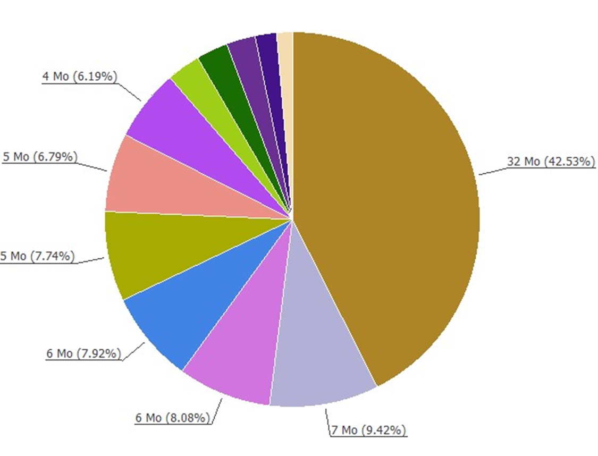

Joachim GUTTER
Etudiant BUT réseau & télécommunication | Passionné par l'informatique
Adresse: 67140, Barr
Email: joachimgutter@gmail.com
Etudiant BUT réseau & télécommunication | Passionné par l'informatique
Adresse: 67140, Barr
Email: joachimgutter@gmail.com
Construire un réseau informatique
Construction d'un réseau informatique avec différents services vu tout au long de l'année. Mise en place d'un service DHCP et des autres différents serveurs (production, dev, sauvegarde). Construction des VLAN, mise en place Spanning-tree, ACL, du NAT et routage inter-Vlan.
Compétences mobilisées :
Segmentation réseau (masquage variable, VLAN).
Routage inter-VLAN et équilibrage de charge.
Sécurisation des ports et filtrage (ACL).
Gestion des services (FTP, web, synchronisation).
Bénéfice : Maîtrise des réseaux locaux complexes et sécurisés, préparation aux environnements professionnels.
Découvrir un dispositif de transmission
Projet sur la découverte et l'analyse des singaux wifi 2.4 et 5 GHz. Utilisation du logiciel Acrylic. Cablâge d'un AP via baie informatique et fabrication des cable RJ-45.
Compétences mobilisées :
Analyse réseau : Mesure de signaux Wifi, interprétation de heatmaps.
Optimisation : Placement des AP, sélection des canaux.
Simulation : Configuration de réseaux virtuels (Packet Tracer).
Sécurité : Gestion du PoE, compatibilité matérielle.
Bénéfice : Maîtrise des outils professionnels pour l'audit et l'optimisation de réseaux sans fil.
Traiter des données
Outil de reporting pour réaliser sous la forme de plusieurs sripts (python et powershell) un outil d'analyse et de tri de fichiers avec affichage graphique en camembert pour supprimer des fichiers d'un repértoire donné.
Sélection du répertoire via une interface graphique (Python + QFileDialog).
Analyse récursive des fichiers, tri par taille, et filtrage (seuil + limite de 100 fichiers).
Export en JSON des résultats.
Affichage graphique :
Camembert pour visualiser les tailles.
Légendes avec cases à cocher (25 par page).
Bouton pour générer un script de suppression.
Script PowerShell pour lancer l’outil et gérer les suppressions (avec confirmation).
Bénéfice : Outil pratique pour les administrateurs système et utilisateurs avancés.
Se présenter:
Objectif : Créer un CV interactif sous forme de site web multipage, mettant en valeur vos compétences, formations et expériences professionnelles, avec une navigation fluide entre les sections.
Sections synthétiques :
Formations (liens vers une page détaillée).
Diplômes (liens vers une page détaillée).
Expériences professionnelles (liens vers une page détaillée).
Compétences : Organisées en 3 colonnes (Flexbox) :
Compétences RT.
Compétences techniques.
Compétences humaines.
Informations diverses : Langues, hobbies, activités culturelles.
Pages secondaires (au moins 2) :
Détails des formations (modules, projets).
Détails des diplômes (résultats, liens vers établissements).
Détails des expériences (postes, entreprises).
2. Fonctionnalités techniques Navigation par ancres : Liens internes (#nom_ancre) pour sauter entre les sections. Effet de défilement doux (scroll-behavior: smooth). Liens externes : mailto: pour l’email. Google Maps pour l’adresse. Sites web des établissements/entreprises. CSS unique : Un seul fichier CSS pour toutes les pages.{kind=link}
{kind=link}
{kind=link}
{kind=link}